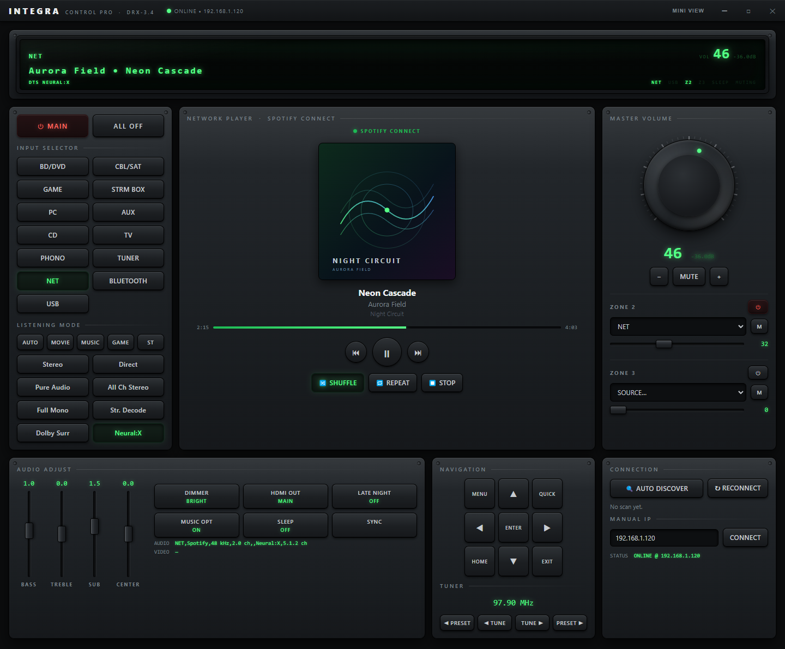
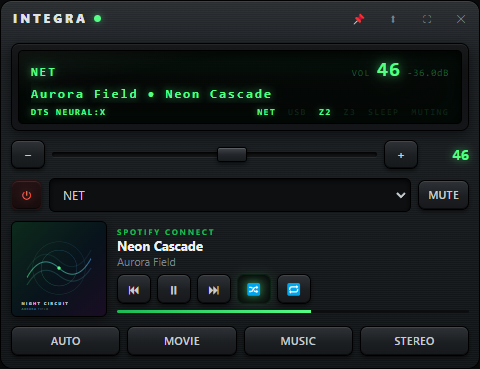

Control every part of your receiver without reaching for your phone.
Integra Control Pro is a Windows desktop app that talks straight to your receiver over the network. It mirrors the front-panel display, exposes every input, listening mode, zone and trim, and shows what Spotify Connect is playing — with artwork. No account, no cloud service, nothing between your PC and the amplifier.
Built and tested against an Integra DRX-3.4. Free and open source.

Built for the way receivers actually work
Everything here talks the receiver's own protocol, so the app and the front panel never disagree — turn the physical knob and the window follows it instantly.
Finds the receiver by itself
A network broadcast locates the unit on launch and remembers it. If your network blocks discovery, type the IP in once and it sticks.
Front-panel replica
The green display is reproduced in both views: source, scrolling track or station line, volume in dB, and the indicator lamps for mode, zones, sleep and muting.
Every input, every mode
All thirteen source selectors, the quick modes (Auto, Movie, Music, Game, Stereo) and direct picks like Pure Audio, Neural:X, All Channel Stereo and Full Mono.
Volume that feels like the knob
Drag the machined dial, roll the scroll wheel, or step it a notch at a time — with the same dB readout the receiver shows, plus mute.
Zone 2 and Zone 3
Independent power, source, volume and mute for both extra zones, without walking to the rack or digging through an on-screen menu.
Tone and setup trims
Bass, treble, subwoofer and centre on vertical faders in half-decibel steps, alongside dimmer, HDMI output, Late Night, Music Optimizer and the sleep timer.
Spotify Connect, with artwork
Cover art, title, artist, album and a running progress bar, plus play, pause, skip, shuffle and repeat. The receiver reports it all — you never sign in to anything.
Mini view that stays out of the way
A compact always-on-top window with the display, volume, source, transport and artwork. Collapse it further and only the panel and volume strip remain.
It tells you the truth about the link
The status lamp turns green only once the receiver has actually answered — not merely because a socket opened. If it stops responding, the app says so and reconnects on its own.
Nothing leaves your network
Direct control on your own LAN. No account, no telemetry, no vendor cloud in the middle, and it keeps working when the internet doesn't.
Full desk, or a sliver in the corner
Use the full window when you're setting up a listening session — inputs, modes, trims and zones all at once. Switch to the mini window when the music is already playing and you only need the display, the volume and the next track.
- Pin it above other windows, or let it sit in the taskbar
- Collapse to a single strip: display and volume only
- Album art, track and transport stay visible while collapsed
- One click back to the full window, same connection

What it needs
- Control protocol
- Integra / Onkyo eISCP over TCP port 60128
- Discovery
- UDP broadcast on the local subnet, with manual IP entry as a fallback
- Tested hardware
- Integra DRX-3.4. Other Integra and Onkyo network receivers speak the same protocol and are likely to work, but are untested.
- Receiver setting
- Network Standby must be on to control the unit while it is in standby
- System
- Windows 10 (1809 or newer) and Windows 11, 64-bit
- Accounts required
- None. Track and artwork data comes from the receiver itself
Put it on your desktop
Download the installer, or build it from source in two commands. The Microsoft Store listing is on the way.
Free, MIT-licensed, and open to pull requests.